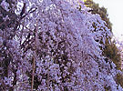
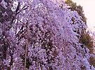

You can preview color changes and reproduce natural colors by using the color pattern function in ScanGear (scanner driver)'s Basic Mode tab.
Correct colors that have faded with time or due to colorcast. "Colorcast" is a phenomenon where a specific color affects the entire picture due to the weather or ambient strong colors.
Click an arrow in Color Adjustment to emphasize the corresponding color.
Cyan & red, magenta & green and yellow & blue are complementary color pairs (each pair produces a shade of gray when mixed). You can reproduce the natural colors of the scene by reducing the cast color and increasing the complementary color.
It is recommended that you find a portion in the image where it should be white, and adjust the colors so that the portion turns white.
Preview image appears in the center. Preview image colors change as you adjust them.
Below is an example of correcting a bluish image.
Since Blue and Green are too strong, click the Yellow and Magenta arrows to correct.
Before |
After |
|  |  |
 Note
NoteColor adjustments are applied only to the scan area (cropping frame) or the frame selected in thumbnail view.
You can select multiple frames or cropping frames by clicking them while pressing the command key.
You can also select a color tone from the color pattern displayed on the left of the Color Pattern screen.
You can also use this function to add a specific tint to an image. Increase the magenta to add a warm tint, and increase the blue to add a cool tint.